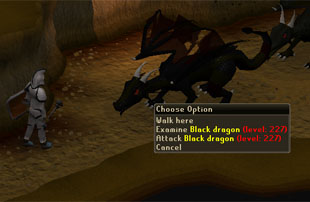

Fighting - The Basics
Combat Levels
The very first thing you need to know about combat is what a combat level is and what you can do with it.
The combat level depends on the combat skills of a player or NPC. Generally, the higher the combat level, the more skilled the player or NPC is in combat.

When you hover your mouse cursor over an NPC or player, that person's (or NPC's) combat level will be displayed.
Combat levels in green mean that you have a higher combat level. Combat levels displayed in red mean you have a lower combat level. If the colour is displayed in yellow, it means the player has a similar combat level to you, or the NPC is within your combat level range.
Your own Combat level is calculated from your statistics, using either melee (Attack and Strength), Magic or Ranged, along with Defence, Constitution, Prayer and Summoning. Summoning is only included in this in certain circumstances, however:
- If you have a familiar out, a Summoning pouch in your inventory, or you have recently dropped a Summoning pouch, your Combat level will include Summoning.
- If you do not have a familiar out and have no pouches in your inventory, it will show your normal Combat level with the extra Summoning levels indicated by a plus sign. For example, 50+5 if your Combat level is 50 not including Summoning and 55 if Summoning is included.
Combat Areas
There are two forms of combat area found throughout the land of RuneScape - single and multicombat areas.
A single combat area restricts players so that any player can only fight a single target at any time. Similarly, any target can only be attacked by one player at a time.
![[image]](../../img/main/kbase/controls/multicombat_symbol.gif) Multicombat areas are identified upon entering by two crossed swords appearing in the bottom right hand corner of your screen. Anywhere else is classed as a single combat area. Multicombat areas are especially dangerous in the Wilderness as more than one monster can attack you at a time, and there is no shortage of them. This could be beneficial to a player because by fighting as a team you will decrease your chances of dying and will increase your chances of defeating stronger opponents.
Multicombat areas are identified upon entering by two crossed swords appearing in the bottom right hand corner of your screen. Anywhere else is classed as a single combat area. Multicombat areas are especially dangerous in the Wilderness as more than one monster can attack you at a time, and there is no shortage of them. This could be beneficial to a player because by fighting as a team you will decrease your chances of dying and will increase your chances of defeating stronger opponents.
Life Points

The green area on your life bar shows your remaining health, whereas the red shows how much health you have lost. If you want or need a more accurate view of your health, look at the life points globe next to your mini-map. This will display the number of life points remaining from your total; for example, 180/450.
Always keep an eye on this and make sure that your life points do not reach 0, or you will die! To avoid death, you will need to heal during a fight to restore your life points. For this you will need food. To see what food is 'best' and what heals the most, see the Cooking guide.
If you find you are losing the battle, then you can run away by clicking on the ground. If you do retreat it's best to keep moving, as monsters will pursue you and carry on attacking. If you run far enough away, monsters will eventually give up the chase.
Death
If you are unfortunate, or do not take any health supplies, you may die as a result of combat. If this happens, you will respawn at your respawn point. This point is generally Lumbridge, but for members who have completed the Recruitment Drive quest, you may change it to Falador. You change this using the 'Gaze of Saradomin' obtained as a reward from this quest. If you have completed King's Ransom you can change your respawn point to Camelot, and if you have completed Nomad's Requiem then you can change it to Soul Wars.
![[image]](../../img/main/kbase/misc/cool_warrior.gif) If you die normally (without a skull over your head), you will respawn at your respawn point, retaining the three most valuable items that you were carrying at the time. If you are using the Protect Item Prayer at the time of your death, you will retain four items.
If you die normally (without a skull over your head), you will respawn at your respawn point, retaining the three most valuable items that you were carrying at the time. If you are using the Protect Item Prayer at the time of your death, you will retain four items.
If you have any doubts as to what you will keep when you die, simply click the 'Items kept at death' button in your 'Equipped' interface. Click here to read more about this.
If you were 'skulled' you will retain none of your equipped or carried items. This will happen if you die on a PvP or Bounty world or if you die in the Abyss within the last 20 minutes and are skulled at the time of your death (you cannot use the Protect Item prayer on a PvP or Bounty World). The only exception to these rules is on +1 item Bounty Worlds. On these worlds, you will keep your most valuable item when you die.
The only exception to this is if you are using the Protect Item prayer. This prayer (if activated near the time of death and you have enough Prayer points to make it last until your death) will allow you to keep one more item than usual (the prayer will not work on PvP or Bounty Worlds).
NOTE: The value of an item is not dependent upon the market price. The value is the set price defined by the RuneScape world. To get an indication of these prices you can use the 'value' option on items in the many general stores around RuneScape.

More articles in
Combat
|
|
|
Further Help
Need more help? Come chat with us!
|
|